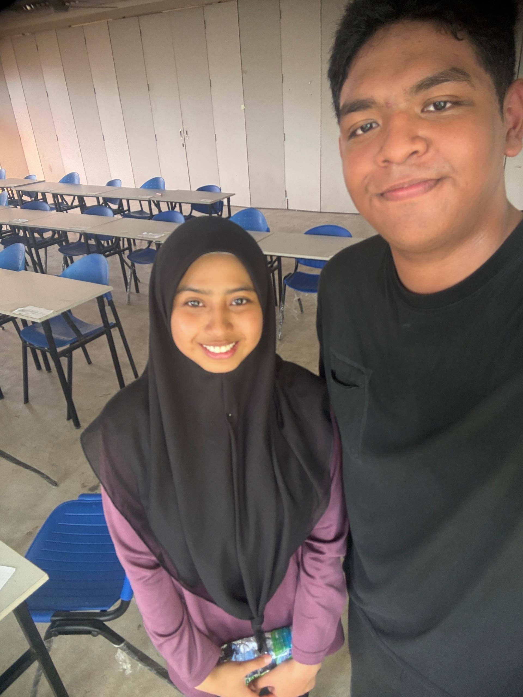
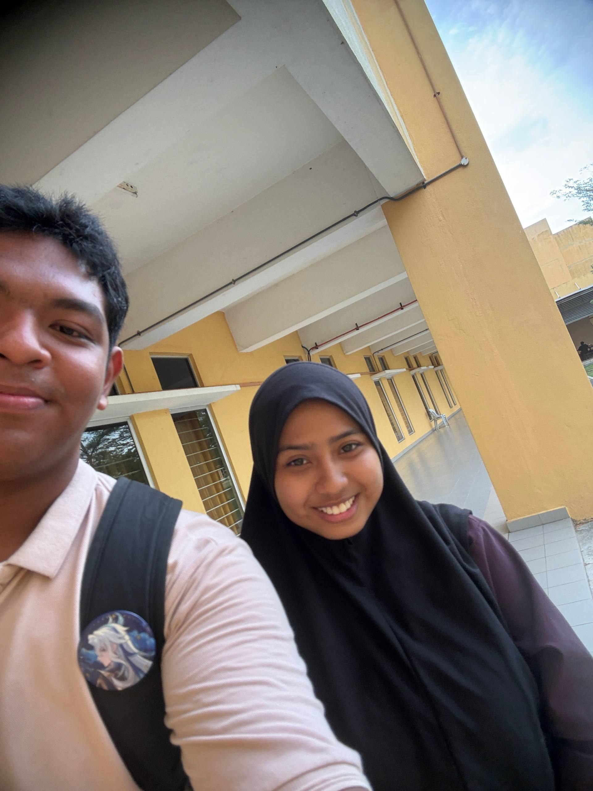
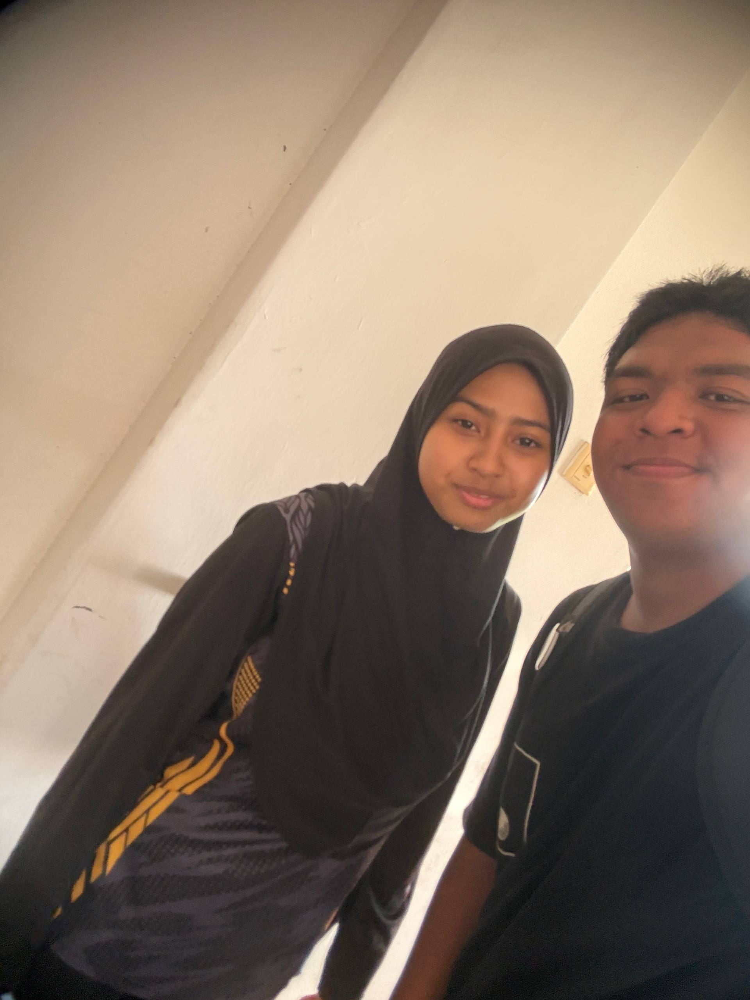
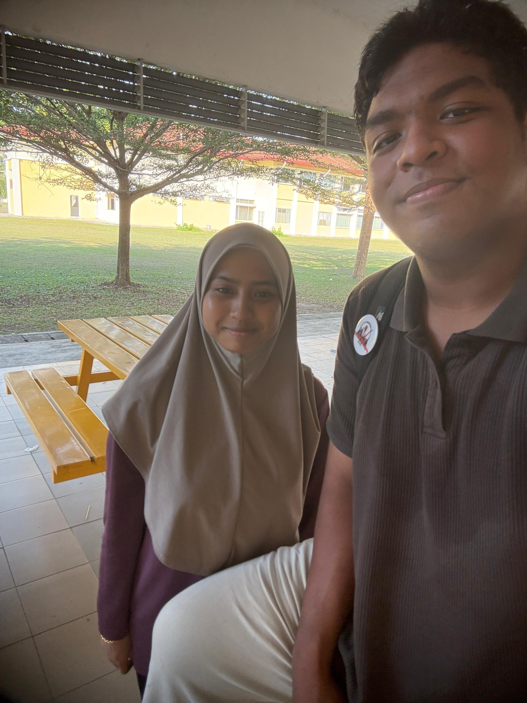
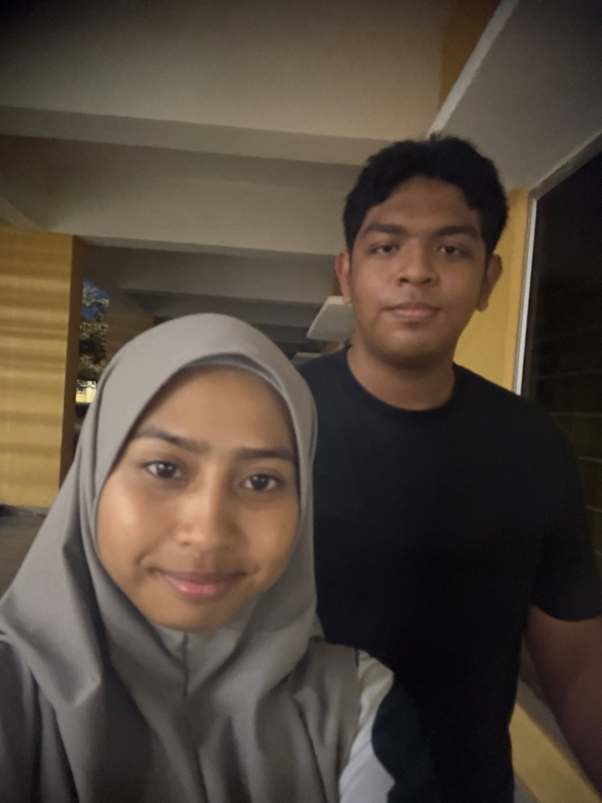
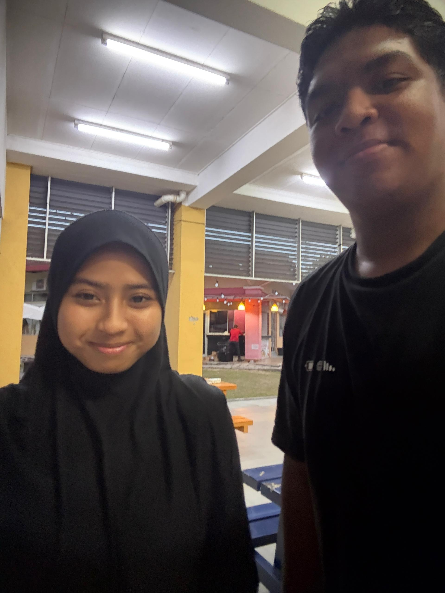

Helloww Assalamualaikum baby sayaaa!! Harini tak sama macam hari lain, today is your birthday!!!!! HAPPY BIRTHDAY MOHAMMAD AFIQ HAIKAL!!🎂🫶🏻
Tak sangka dah bertambah setahun umur awaknya (eeuuww makin tua) , saya happy sangat dapat sambut birthday awak kalini sama² walaupun tak dapat jumpa, sorry baby I can't be there for you 🥹🙏🏻
Memandangkan ni first time kita sambut birthday awak sooo, saya nak bagitahu dulu first impression saya kat awak. Awak secara kasarnya seorang yang really extrovert, talkative, bising as always (that's ma boy) and a really good leader. I never expected kita akan rapat and end up being together. When I get to know you more closely, I see much more interesting things in you sayang. Awak selalu happykan orang sekeliling awak even though you have to face a really hard times, awak seorang yang caring, awak orang yang nampak perkara² kecil pada seseorang, awak semangatkan orang sampai awak lupa awak pun need it, you such a really good friends, you're a good listener and a good responders. Bila kita dah start suka each other, awak layan saya baikkk sangatttt. Awak memang percayakan saya sejak awal lagi, awak selalu bagi saya support, awak chears me up bila saya down, awak adalah one of big support system for me. Awak treat saya sangat gentle, awak jaga hati saya, awak noted apa yang saya suka and tak. Awak seorang yang sangat gentleman, awak tak pernah gagal nak bagi saya time every single days even when you're really busy, awak always update saya and cormfort saya whenever I'm overthinking. I never date a guy yang extrovert before but I really grateful you come in my life baby🤍 . Awak betul² brings colours into my life sayang, thank you so much baby and I really mean it 🫂.
Awak ni special sangat tau Afiq Haikal. Apa yang saya nampak love language awak adalah words of affirmation. Awak suka Kene update, awak suka give and received long text, awak suka orang cakap sesuatu yang buat awak rasa dihargai, tapi awak pun mudah terasa bila sesuatu perkataan atau ayat tu boleh buat awak terasa and awak susah nak lupakan. Tapi bagi saya tu bukan la kekurangan awak, tapi awak ni seorang yang anggap kata² seseorang tu serious, that's why I believe, bila awak berjanji awak akan tepati, itu specialnya awak. Awak hatinya pemurah, selalu belanja orang, suka belanja saya makan hehe. Awak comel sangat bila awak clingy dengan saya, awak macam baby saya tau! Saya suka nampak side Afiq yang orang lain tak nampak (bukan bob T20). Ahh! And part saya paling suka is bila awak mamai. Awak punya kacip level ultra pro max oo, lawak tauu and comel sangat...saya rasa ni one of benda yang saya rasa awak comelllll sangattt , I really love you the way you're sayang, never thinks that you're not enough okayyy. Awak banyak buat saya gelak starts kita stranger lagi, saya suka jokes random awak yang awak selalu buat, and awak selalu ragebait saya! Tapi perangai annoying tu yang saya sayang hehehe. Saya suka sangat dengar awak gelak, saya rasa geli hati nak gelak sekali, I wish I can hear that forever! I really loved the way you really concern about me, awak selalu tanya "awak okay tak?" hehehe, I love you sayang.
On this special day, I just want to remind you how much you mean to me. Saya sangatttt∞ sayang awak!!! Awak the best men I've ever met tauu! Never change okay baby. I'm so sorry saya banyak sakitkan hati awak in any ways, but you need to bare in mind, takde sesaat pun saya terfikir nak tinggalkan awak, cari orang lain dan seangkatannya okay. *I will never give up on you as long as you never give up on me too!* Terima kasih dah banyak sabar, efforts, penat lelah, tangisannya dan saya harap this will never ends, let's create more sweet sour memories together! Saya sayangg awak sangat and of course lagi banyak dari awak😝.
Last words is, baby I always here for you whenever you need me sayang. You're not alone all this time, I always support you in anything you do(yang baik² la ofc). In the future, wishing for a big success for you, awak dapat capai cita² awak dan segala impian yang awak inginkan.Saya akan temankan awak selalu, biar saya jadi tulang belakang untuk awak sayang❤️. Dah berjaya jangan lupa saya yaa hehehe.
HAPPY BIRTHDAY MOHAMMAD AFIQ HAIKAL!!!
HAPPY BIRTHDAY BABY!!!
HAPPY BIRTHDAY AFIQ L-E-M-A-H!
HAPPY BIRTHDAY MY NIGGA!!!!(🫄🏿ni afiq nigga gay)
With all my love,
Biha P-A-D-U




